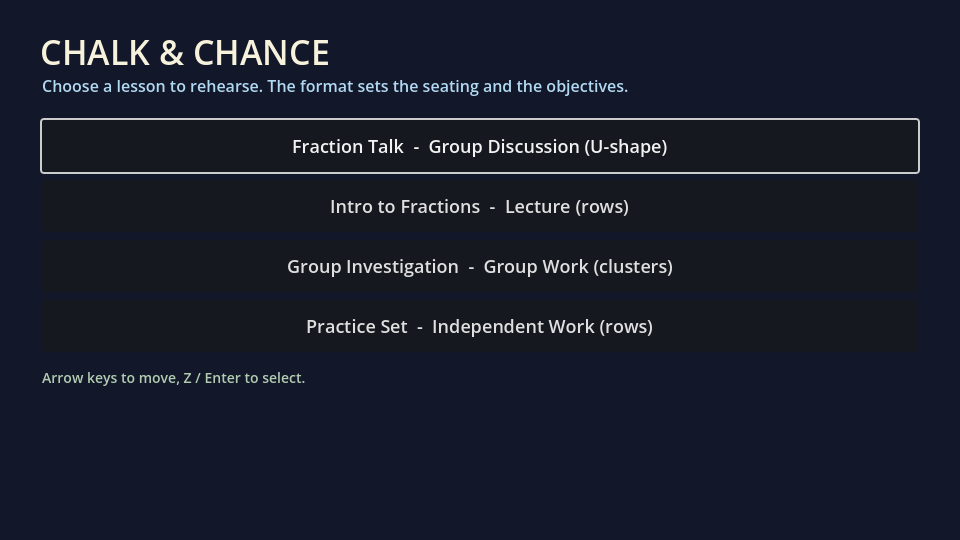
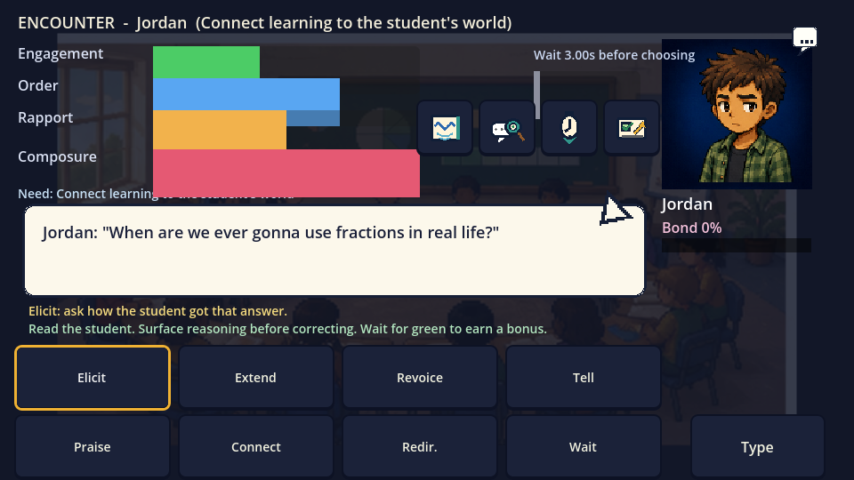
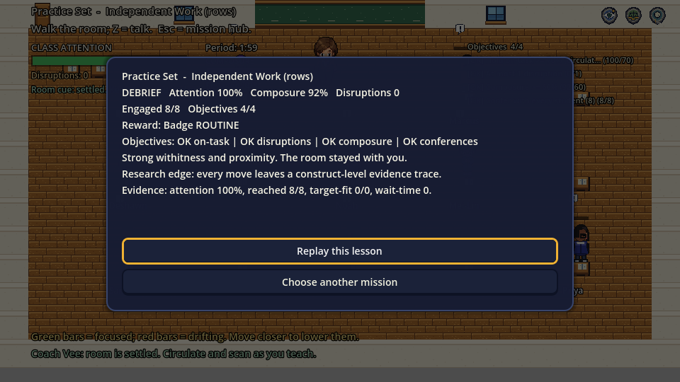

How to start, what each button does, and how to learn from the rehearsal
Chalk & Chance is a short teaching rehearsal. The point is not to guess the right button. The point is to see the classroom, study your choices, and notice how teaching moves change student thinking.
The video walks through the same steps as this guidebook. Use it first if you want the fastest orientation, then use the written guide as a reference while playing.
13-step walkthrough
What to see, study, and notice
Each step separates screen reading from learning interpretation. Use the three columns as a habit: first observe, then study, then reflect.
Step 1
Start the rehearsal
What you see
A classroom scene, students, and teacher-facing information rather than a conventional menu puzzle.
What you study
The room as a practice space. The game asks you to rehearse teaching decisions, not simply complete a level.
What to notice
Mistakes are expected data. A confusing moment tells you what to try differently.
Step 2
Open the demo gate
What you see
A voice-safe taste demo button and a server-verified passcode field for voice-enabled access.
What you study
The public taste demo keeps spoken student lines silent so casual visitors do not trigger ElevenLabs costs.
What to notice
If voice is silent, it is intentional. Use the passcode gate for voice-enabled review sessions.
Step 3
Read the first screen calmly
What you see
Class code, name, password, guest-play options, and a voice status note in public builds.
What you study
Class sign-in is for assigned courses. Public demo access is enough for first-time exploration.
What to notice
Settings explains whether voice is protected, unavailable, or enabled.
Step 4
Use the Mission Hub as a learning map
What you see
START HERE, mission rows, badges, and locked missions.
What you study
Badges are practice goals: Routine is pacing, Echo is reasoning, Balance is airtime, Mirror is feedback, and Insight is capstone judgment.
What to notice
Locked missions are not a punishment. They show the sequence of teaching skills the game wants you to build.
Step 5
Notice Settings and Import
What you see
Settings and Import a lesson plan.
What you study
Settings adjusts comfort: sound effects, voice status, larger text, reduced motion, and dialogue speed. Import turns your own lesson text into a playable scenario.
What to notice
The game can become closer to your actual teaching context, not just a fixed example.
Step 6
Read the classroom signals
What you see
Students, bars, objective checklist, attention, composure, participation, wait time, and disruptions.
What you study
These are live teaching signals. Attention shows whether the room is with you. Composure shows your remaining capacity. Participation shows inclusion.
What to notice
You are managing a learning environment, not only choosing dialogue.
Step 7
Enter a student thinking moment
What you see
A student nearby and an interaction hint.
What you study
Move with arrow keys or WASD. Press Z, Enter, or Space when facing a student.
What to notice
Interaction is a teaching decision. You are deciding when to step into a student's thinking, not collecting points.
Step 8
Read the student first
What you see
A student response, portrait, meters, and possible teaching moves.
What you study
The hidden need behind the response: confusion, dominance, avoidance, anxiety, off-task behavior, or readiness for a deeper prompt.
What to notice
Listen before acting. The best move depends on what the student needs, not just which button sounds positive.
Step 9
Use academic teaching moves
What you see
Elicit, Extend, Revoice, and Wait.
What you study
Elicit asks for reasoning. Extend presses deeper. Revoice clarifies or restates the student's idea. Wait protects thinking time.
What to notice
These moves help students do the thinking themselves.
Step 10
Use social and management moves carefully
What you see
Connect, Praise, Redirect, and Tell.
What you study
Connect draws on a student asset. Praise names useful effort. Redirect protects classroom order. Tell gives the answer directly but may reduce practice.
What to notice
Faster is not always better. The strongest move preserves student thinking while supporting the room.
Step 11
Read the result chip
What you see
Feedback after your move, including changes to understanding, engagement, rapport, and order.
What you study
Cause and effect. Your choice changes the classroom state, and the result chip tells you what moved.
What to notice
The classroom is responding to your teaching decision. Use that response to adjust, not to judge yourself.
Step 12
Use the debrief
What you see
A reflection prompt first, then a compact debrief with objectives, rewards, score drivers, evidence fingerprint, and next focus.
What you study
The missed objective or the strongest evidence line. Low wait time means practice pausing. Low participation means reach quiet students. High disruptions mean smaller redirections.
What to notice
The debrief turns gameplay into reflection-on-action rather than a hidden score screen.
Step 13
Replay with one focus
What you see
The option to replay or choose another mission.
What you study
One specific focus for the next run, such as wait time, eliciting reasoning, or distributing attention.
What to notice
Improvement comes from focused repetition. Try again with a clearer teaching intention.
Button glossary
What each teaching move is for
Use this as a quick reference while playing. The terms are teaching practices, not just game commands.
Elicit
Ask the student to explain their reasoning before you correct or evaluate it.
Extend
Press for a deeper connection, example, justification, or next step.
Revoice
Restate a student's idea so the room can hear it and the student can refine it.
Wait
Pause long enough for thinking to happen. The pause is part of the teaching move.
Connect
Use a student asset, interest, or context to bridge into the academic idea.
Praise
Name a specific useful effort or strategy, not just the person.
Redirect
Handle off-task behavior with the smallest effective intervention.
Tell
Give the answer directly. It may be efficient, but it can reduce student thinking practice.
How to interpret the activity
The game loop as learning loop
Observe: Read the room and the student's response.
Choose: Select a teaching move that fits the need.
Read feedback: Look at what changed in understanding, engagement, rapport, and order.
Reflect: Use the reflection prompt and debrief to name one next practice focus.

Use the Hub as a learning map.

Read student need before choosing a move.

Read evidence as a practice signal.
FAQ
Common beginner questions
Do I need a class code?
No. Use the demo gate or guest play first. Class code is only for assigned class use where progress is saved.
Am I supposed to win every encounter?
No. The game is designed for rehearsal. A miss is useful when it tells you which teaching signal you ignored or misunderstood.
How do I know which button to choose?
Start by reading the student need. If the student is confused, elicit or revoice. If the student needs time, wait. If the room is drifting, redirect. If the student needs connection, connect.
What should I study after a run?
Study the missed objective first, then pick one next focus. Do not try to fix everything in one replay.
Downloads and source files
Guidebook assets
These files are public-facing guide assets for the official site.